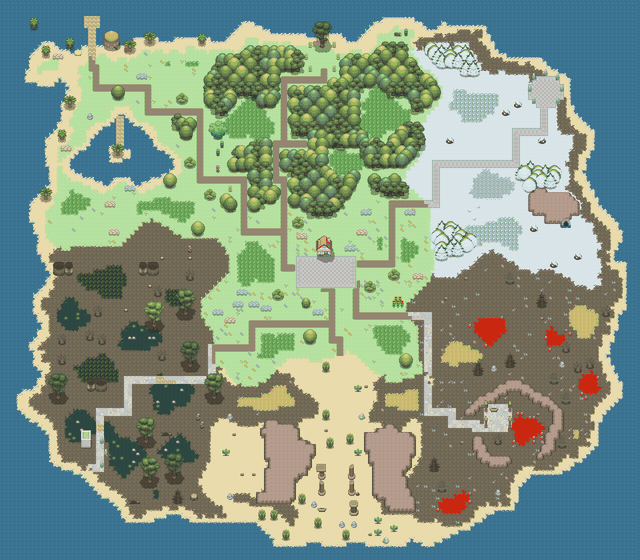

狩獵地帶Safari Zone

城都冠軍的定期活動：搭船從 藍晶市 碼頭前往 狩獵島，在各個生態區狩獵 Lv 80-100 的野生寶可夢，並爭奪會對每位訪客出現的傳說寶可夢。
開放時間
| 白天 | 時間（西部印尼時間，UTC+7） | 時長 |
|---|---|---|
| 星期三、星期六 | 13:00-14:00 | 60 分鐘 |
| 星期三、星期六 | 22:00-23:00 | 60 分鐘 |
僅星期三與星期六。開放前 10 分鐘及開放時會公告（聊天與新聞）。返航警告會在關閉前 5 分鐘與 1 分鐘發出。
如何進入
規則
- 只有 狩獵球 與
 大師球 可以在島上投出。最多 每次進入 30 顆狩獵球 （大師球不算）。狩獵球無法在島外使用。
大師球 可以在島上投出。最多 每次進入 30 顆狩獵球 （大師球不算）。狩獵球無法在島外使用。 - 野生寶可夢 Lv 80-100：每個生態區涵蓋 9 個等級，離碼頭越遠等級越高（海灘與湖泊 80-88、森林 82-90、草原 84-92、沼澤 86-94、雪原 88-96、沙漠 90-98、火山 92-100）。
- 每隻非傳說寶可夢（458 種）依屬性分配到各個生態區，所有訪客共用。完整列表： 狩獵島。
- 島上的捕捉 不受第 2 地區的捕獲上限限制 ，也不受捕獲等級上限限制。
- 落敗（所有寶可夢瀕死）= 隊伍會被治療，你會被送到 藍晶市 碼頭，且 門票即告用完。
- 時間結束時，所有人都會被送回 藍晶市 碼頭。可經由島上碼頭的狩獵地帶船長提前離開（免費，該次的門票結束）。
共享的傳說寶可夢
- 每場 3× ，會有一隻傳說寶可夢或幻之寶可夢出現在島上（開放後第 10-50 分鐘隨機出現，並向每位訪客公布）。
- 出現時為 Lv 130 ，一起戰鬥；第一個投擲成功的人得到牠，捕捉等級為 Lv 90-99。
- 最多 每位玩家每場次 1 隻傳說寶可夢。
 閃電鳥
閃電鳥 超夢
超夢 夢幻
夢幻 雷公
雷公 炎帝
炎帝 水君
水君 洛奇亞
洛奇亞 鳳王
鳳王 時拉比
時拉比